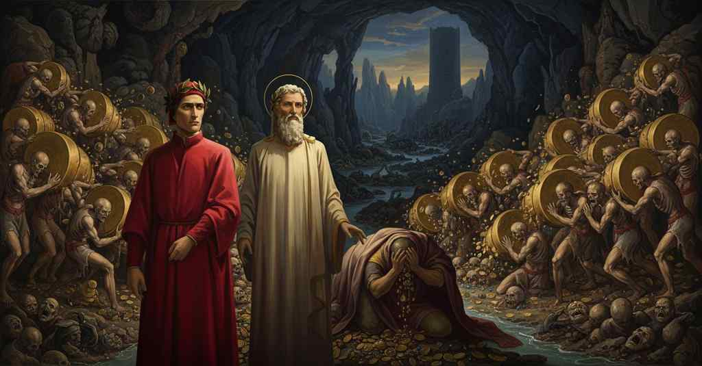

Inferno — Canto 7

After silencing Plutus, Virgil guides Dante through the circle of the avaricious and prodigal, explains the nature of Fortune, and descends to the Stygian marsh to find the wrathful and sullen. プルートを退けて第四圏に入った二人は、富に囚われた亡者たちと幸運の女神について学んだ後、第五圏のスティクスの沼で憤怒の罪人たちを目撃する。
1
«Pape Satàn, pape Satàn aleppe!»,
"Pape Satàn, pape Satàn aleppe!",
「パペ・サタン、パペ・サタン・アレッペ！」
2
cominciò Pluto con la voce chioccia;
began Plutus with his clucking voice;
プルートはしわがれ声で話し始めた。
3
e quel savio gentil, che tutto seppe,
and that gentle sage, who knew all things,
そして、すべてを知るかの優しき賢者は、
4
disse per confortarmi: «Non ti noccia
said to comfort me: "Let not your fear
私を慰めるために言った、「お前の恐怖が
5
la tua paura; ché, poder ch’elli abbia,
harm you; for, whatever power he may have,
汝を害することはない。いかなる力を持とうとも、
6
non ci torrà lo scender questa roccia».
he will not deny us the descent of this rock."
こいつは我々がこの岩を下るのを妨げられぬ」。
7
Poi si rivolse a quella ’nfiata labbia,
Then he turned to that swollen face,
それから、彼はその膨れ上がった唇に向き直り、
8
e disse: «Taci, maladetto lupo!
and said: "Be silent, accursed wolf!
そして言った、「黙れ、呪われし狼よ！
9
consuma dentro te con la tua rabbia.
Consume yourself within with your own rage.
お前の怒りでお前の内を食い尽くすがよい。
10
Non è sanza cagion l’andare al cupo:
Not without cause is this going to the deep:
この深淵への旅は理由なきにあらず。
11
vuolsi ne l’alto, là dove Michele
it is willed on high, there where Michael
それは高みにて欲せられたこと、かのミケーレが
12
fé la vendetta del superbo strupo».
wrought vengeance for the proud rebellion."
傲慢なる反逆に復讐を果たした場所にて」。
13
Quali dal vento le gonfiate vele
As from the wind the swollen sails
風によって膨らんだ帆が、
14
caggiono avvolte, poi che l’alber fiacca,
fall entangled, when the mast snaps,
帆柱が折れるや、絡まりながら落ちるように、
15
tal cadde a terra la fiera crudele.
so fell to the earth the cruel beast.
かくして、かの残酷な獣は地に倒れた。
16
Così scendemmo ne la quarta lacca,
Thus we descended into the fourth hollow,
こうして我らは第四の窪みへと下りていった、
17
pigliando più de la dolente ripa
taking more of the sorrowful bank
悲しみの岸辺をさらに進み、
18
che ’l mal de l’universo tutto insacca.
that sacks up all the evil of the universe.
それは全宇宙の悪をすべて袋に詰めている。
19
Ahi giustizia di Dio! tante chi stipa
Ah, justice of God! who crams so many
ああ神の正義よ！ 私が見たほどの多くの
20
nove travaglie e pene quant’ io viddi?
new travails and pains as I saw?
新たな苦役と刑罰を、誰が詰め込むのか？
21
e perché nostra colpa sì ne scipa?
And why does our guilt so waste us?
そして、なぜ我らの罪はかくも我らを損なうのか？
22
Come fa l’onda là sovra Cariddi,
As does the wave there over Charybdis,
かのカリュディスの上で波がそうするように、
23
che si frange con quella in cui s’intoppa,
that breaks itself against the one with which it clashes,
それが出会う波と砕け合うように、
24
così convien che qui la gente riddi.
so must the people here perform their round.
かくして、ここの人々は輪舞を踊らねばならぬ。
25
Qui vid’ i’ gente più ch’altrove troppa,
Here I saw people more numerous than elsewhere,
ここで私は見た、他所よりも遥かに多くの人々を、
26
e d’una parte e d’altra, con grand’ urli,
and on one side and the other, with great howls,
一方からと他方から、大声で叫びながら、
27
voltando pesi per forza di poppa.
rolling weights by strength of their chests.
胸の力で重荷を転がしているのを。
28
Percotëansi ’ncontro; e poscia pur lì
They struck against each other; and then right there
彼らは互いにぶつかり合った。そしてその場で
29
si rivolgea ciascun, voltando a retro,
each would turn, rolling backward,
各々が向きを変え、後ろに転がし、
30
gridando: «Perché tieni?» e «Perché burli?».
shouting: “Why do you hoard?” and “Why do you squander?”
叫んだ、「なぜ貯める？」そして「なぜ浪費する？」。
31
Così tornavan per lo cerchio tetro
Thus they returned through the dismal circle
このように彼らは陰鬱な円環を戻っていった
32
da ogne mano a l’opposito punto,
from each side to the opposite point,
各方向から反対の地点へと、
33
gridandosi anche loro ontoso metro;
shouting again their shameful refrain;
再び互いに恥ずべき詩句を叫びながら。
34
poi si volgea ciascun, quand’ era giunto,
then each one turned, when he had arrived,
そして各々は、そこに着くと向きを変え、
35
per lo suo mezzo cerchio a l’altra giostra.
through his half-circle to the other joust.
自らの半円を通って、もう一方の馬上槍試合へと向かう。
36
E io, ch’avea lo cor quasi compunto,
And I, who had my heart almost pierced with pity,
そして私は、心がほとんど刺し貫かれる思いで、
37
dissi: «Maestro mio, or mi dimostra
said: “My master, now show me
言った、「わが師よ、今お示しください
38
che gente è questa, e se tutti fuor cherci
what people these are, and if all were clerics,
この人々は何者か、そして私たちの左手にいるこの剃髪の者たちは、
39
questi chercuti a la sinistra nostra».
these tonsured ones on our left.”
皆聖職者だったのかを」。
40
Ed elli a me: «Tutti quanti fuor guerci
And he to me: “All of them were so squint-eyed
すると彼は私に、「彼らは皆、最初の生において精神が
41
sì de la mente in la vita primaia,
of mind in the first life,
甚だしく斜視であったため、
42
che con misura nullo spendio ferci.
that they made no expenditure with measure.
節度をもって金を使うことをしなかったのだ。
43
Assai la voce lor chiaro l’abbaia,
Their voice barks this out clearly enough
その声が、それをはっきりと吠えたてている、
44
quando vegnono a’ due punti del cerchio
when they come to the two points of the circle
彼らが円環の二つの地点に来た時に
45
dove colpa contraria li dispaia.
where a contrary fault divides them.
反対の罪が彼らを分かつ場所で。
46
Questi fuor cherci, che non han coperchio
These were clerics, who have no hairy covering
これらは聖職者たちで、頭に毛深い
47
piloso al capo, e papi e cardinali,
on their head, and popes and cardinals,
覆いがなく、法王や枢機卿たちだ、
48
in cui usa avarizia il suo soperchio».
in whom avarice practices its excess.”
彼らの内では、貪欲がその過剰を尽くすのだ」。
49
E io: «Maestro, tra questi cotali
And I: “Master, among such as these
そして私、「師よ、このような者たちの中に
50
dovre’ io ben riconoscere alcuni
I should indeed recognize some
私は何人か見分けられるはずですが
51
che furo immondi di cotesti mali».
who were befouled by these evils.”
これらの悪に汚れていた者たちを」。
52
Ed elli a me: «Vano pensiero aduni:
And he to me: “You assemble a vain thought:
すると彼は私に、「無駄な考えを寄せ集めているな。
53
la sconoscente vita che i fé sozzi,
the undiscerning life that made them squalid
彼らを汚した無分別な生が、
54
ad ogne conoscenza or li fa bruni.
now makes them dark to all recognition.
今やいかなる認識に対しても彼らを薄暗くしている。
55
In etterno verranno a li due cozzi:
Eternally they will come to the two buttings:
永遠に彼らは二つの衝突を繰り返すだろう。
56
questi resurgeranno del sepulcro
these will rise from the sepulcher
これらは墓から甦るだろう、
57
col pugno chiuso, e questi coi crin mozzi.
with a closed fist, and these with their hair shorn.
握りしめた拳で、そしてこれらは刈り取られた髪で。
58
Mal dare e mal tener lo mondo pulcro
Ill-giving and ill-keeping has taken the fair world
悪しき施しと悪しき保持が、美しい世界を
59
ha tolto loro, e posti a questa zuffa:
from them, and set them to this scuffle:
彼らから奪い、この乱闘に置いたのだ。
60
qual ella sia, parole non ci appulcro.
what it is like, I do not adorn with fair words.
それがどのようなものか、言葉で美しく飾ることはすまい。
61
Or puoi, figliuol, veder la corta buffa
Now you can see, son, the short mockery
さあ、息子よ、見ることができるだろう、短い道化芝居を
62
d’i ben che son commessi a la fortuna,
of the goods that are committed to Fortune,
幸運の女神に委ねられた富の、
63
per che l’umana gente si rabbuffa;
for which the human race embroils itself;
そのために人類が争い合う富の。
64
ché tutto l’oro ch’è sotto la luna
for all the gold that is under the moon
というのも、月下にあるすべての黄金も
65
e che già fu, di quest’ anime stanche
and that ever was, of these weary souls
かつてあったすべての黄金も、この疲れ果てた魂たちの
66
non poterebbe farne posare una».
could not give rest to a single one.”
一人たりとも休ませることはできないのだから」。
67
«Maestro mio», diss’ io, «or mi dì anche:
«My Master,» I said, «now also tell me:
「師よ」と私は言った、「どうか今、私にお教えください、
68
questa fortuna di che tu mi tocche,
this Fortune that you touch on for me,
あなたが触れられたこの幸運の女神とは、
69
che è, che i ben del mondo ha sì tra branche?».
what is she, who has the world’s goods so in her clutches?».
いかなるものか、世の富をその鉤爪に握っているとは？」。
70
E quelli a me: «Oh creature sciocche,
And he to me: «Oh foolish creatures,
すると彼は私に言った、「おお、愚かなる者たちよ、
71
quanta ignoranza è quella che v’offende!
how great is the ignorance that harms you!
なんという無知がお前たちを害していることか！
72
Or vo’ che tu mia sentenza ne ’mbocche.
Now I want you to receive my judgment.
さあ、私の裁断を汝が心に留めるがよい。
73
Colui lo cui saver tutto trascende,
He whose knowledge transcends all,
その知があらゆるものを超越するお方（神）は、
74
fece li cieli e diè lor chi conduce
made the heavens and gave them their guides
天を創り、それに導き手をお与えになった、
75
sì, ch’ogne parte ad ogne parte splende,
so that every part shines on every part,
それにより、どの部分も他の部分を照らし、
76
distribuendo igualmente la luce.
distributing the light equally.
光を等しく分配するようにと。
77
Similemente a li splendor mondani
Likewise, for worldly splendors
同様に、この世の輝きに対しては
78
ordinò general ministra e duce
he ordained a general minister and guide
全般を司る仕え手であり導き手をお定めになった、
79
che permutasse a tempo li ben vani
who would, in time, exchange the vain goods
時に応じて虚しい富を移し替えさせるために、
80
di gente in gente e d’uno in altro sangue,
from people to people, and from one bloodline to another,
民族から民族へ、家系から家系へと、
81
oltre la difension d’i senni umani;
beyond the defense of human wits;
人間の知恵の及ばぬところで。
82
per ch’una gente impera e l’altra langue,
wherefore one people rules and another languishes,
それゆえに、ある民族は栄え、ある民族は衰える、
83
seguendo lo giudicio di costei,
following her judgment,
この女神の裁きに従って、
84
che è occulto come in erba l’angue.
which is hidden, like a snake in the grass.
その裁きは草むらの蛇のように隠されている。
85
Vostro saver non ha contasto a lei:
Your knowledge cannot stand against her:
お前たちの知恵は彼女には対抗できない。
86
questa provede, giudica, e persegue
she provides, judges, and pursues
彼女は備え、裁き、そして追い求める
87
suo regno come il loro li altri dèi.
her kingdom, as the other gods do theirs.
己が王国を、他の神々がそうするように。
88
Le sue permutazion non hanno triegue:
Her permutations have no truce:
その移し替えに休みはない。
89
necessità la fa esser veloce;
necessity makes her swift;
必然性が彼女を速やかにさせる。
90
sì spesso vien chi vicenda consegue.
so often comes one who gets his turn.
それゆえ、しばしば交代の時が訪れる。
91
Quest’ è colei ch’è tanto posta in croce
This is she who is so put on the cross
これこそが、あれほど十字架にかけられる女神なのだ、
92
pur da color che le dovrien dar lode,
even by those who ought to give her praise,
本来は彼女を讃えるべき者たちからして、
93
dandole biasmo a torto e mala voce;
giving her wrongful blame and an evil name;
不当な非難と悪評を浴びせかけられ。
94
ma ella s’è beata e ciò non ode:
but she is blessed and does not hear it:
しかし彼女は祝福されており、それを聞き入れない。
95
con l’altre prime creature lieta
with the other first creatures, happy,
他の原初の被造物らと共に喜び、
96
volve sua spera e beata si gode.
she turns her sphere and rejoices in her bliss.
己が天球を回し、祝福されて楽しむのだ。
97
Or discendiamo omai a maggior pieta;
Now let us descend to greater suffering;
さあ、今やより大いなる苦難へと下って行こう。
98
già ogne stella cade che saliva
already every star is falling that was rising
すでに、私が旅立った時に昇っていた星は皆、沈みつつある、
99
quand’ io mi mossi, e ’l troppo star si vieta».
when I set out, and to stay too long is forbidden».
そして長居することは禁じられているのだ」。
100
Noi ricidemmo il cerchio a l’altra riva
We cut across the circle to the other bank
我らは円環を横切り、もう一方の岸へと至った
101
sovr’ una fonte che bolle e riversa
above a spring that boils and pours forth
沸き立ち、溢れ出る泉の上を
102
per un fossato che da lei deriva.
through a channel that from it derives.
そこから流れ出る堀を通って。
103
L’acqua era buia assai più che persa;
The water was much darker than perse;
水はペルサよりも遥かに暗く、
104
e noi, in compagnia de l’onde bige,
and we, in the company of the murky waves,
そして我らは、灰色の波と共に、
105
intrammo giù per una via diversa.
entered down by a strange path.
異なった道を通って下へと入った。
106
In la palude va c’ha nome Stige
Into the marsh that has the name Styx
スティクスという名を持つ沼へと
107
questo tristo ruscel, quand’ è disceso
this sad stream goes, when it has descended
この陰鬱な小川は、下り着くと流れ込む
108
al piè de le maligne piagge grige.
to the foot of the malignant gray slopes.
邪悪な灰色の岸辺の麓に。
109
E io, che di mirare stava inteso,
And I, who was intent on gazing,
そして私は、見つめることに心を集中し、
110
vidi genti fangose in quel pantano,
saw muddy people in that swamp,
その沼沢に泥まみれの者たちを見た、
111
ignude tutte, con sembiante offeso.
all naked, with an outraged look.
皆裸で、憤怒の形相をしていた。
112
Queste si percotean non pur con mano,
These struck each other not only with their hands,
彼らは手だけでなく、
113
ma con la testa e col petto e coi piedi,
but with their heads and chests and with their feet,
頭と胸と足でも互いを打ち、
114
troncandosi co’ denti a brano a brano.
tearing themselves to pieces with their teeth.
歯で互いをずたずたに引き裂いていた。
115
Lo buon maestro disse: «Figlio, or vedi
The good master said: "Son, now you see
善き師は言った、「息子よ、今お前が見ているのは
116
l’anime di color cui vinse l’ira;
the souls of those whom anger overcame;
怒りに打ち負かされた者たちの魂だ。
117
e anche vo’ che tu per certo credi
and also I want you to believe for certain
そしてまた、確信してほしいのだが
118
che sotto l’acqua è gente che sospira,
that under the water there are people who sigh,
水面下には溜息をつく者たちがおり、
119
e fanno pullular quest’ acqua al summo,
and make this water bubble at the surface,
この水の表面を泡立たせている、
120
come l’occhio ti dice, u’ che s’aggira.
as your eye tells you, wherever it turns.
お前の目が告げるように、どこを巡っても。
121
Fitti nel limo dicon: “Tristi fummo
Stuck in the slime, they say: ‘Sullen were we
泥に深く沈み、彼らは言う、『我らは陰鬱であった
122
ne l’aere dolce che dal sol s’allegra,
in the sweet air that is gladdened by the sun,
太陽に喜ぶ甘美な大気の中で、
123
portando dentro accidïoso fummo:
carrying inside a sullen smoke:
内に陰鬱な煙を抱きながら。
124
or ci attristiam ne la belletta negra”.
now we are sullen in the black mire’.
今は黒い泥の中で陰鬱に沈んでいる』と。
125
Quest’ inno si gorgoglian ne la strozza,
This hymn they gurgle in their throats,
この聖歌を彼らは喉でゴボゴボと鳴らし、
126
ché dir nol posson con parola integra».
for they cannot say it with unbroken words».
なぜなら完全な言葉でそれを言えぬからだ」。
127
Così girammo de la lorda pozza
Thus we circled a great arc of the foul marsh,
かくして我らは汚れた水溜りを巡った
128
grand’ arco tra la ripa secca e ’l mézzo,
between the dry bank and the swamp,
乾いた岸と水面の中間を大きな弧を描いて、
129
con li occhi vòlti a chi del fango ingozza.
with eyes turned to those who gorge on the mud.
泥を飲み込む者たちに目を向けながら。
130
Venimmo al piè d’una torre al da sezzo.
We came at last to the foot of a tower.
ついに我らは、ある塔の麓にたどり着いた。